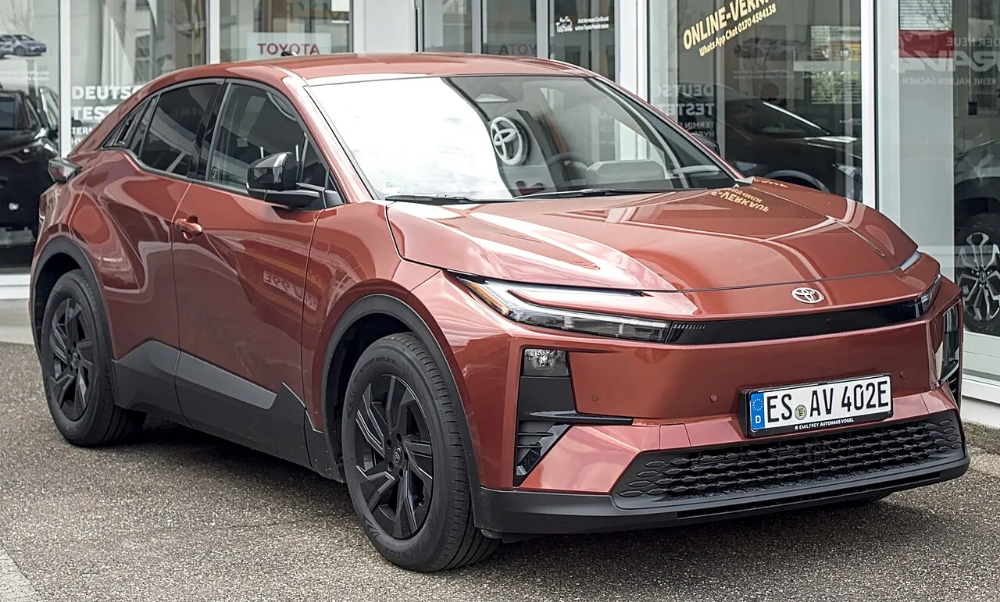
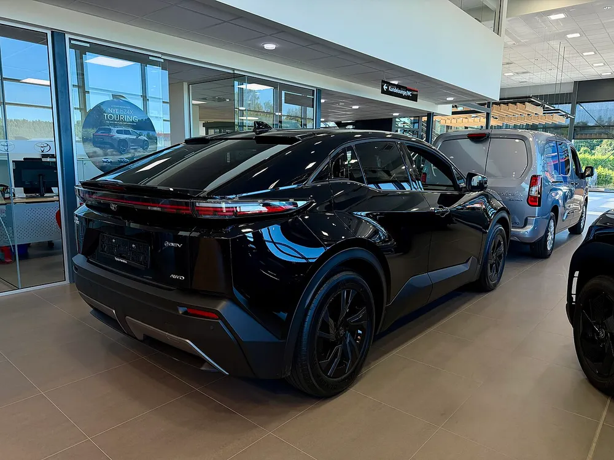
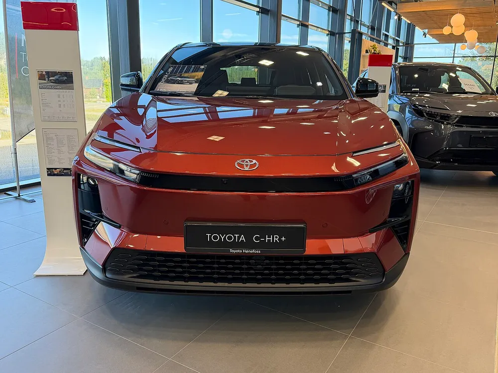
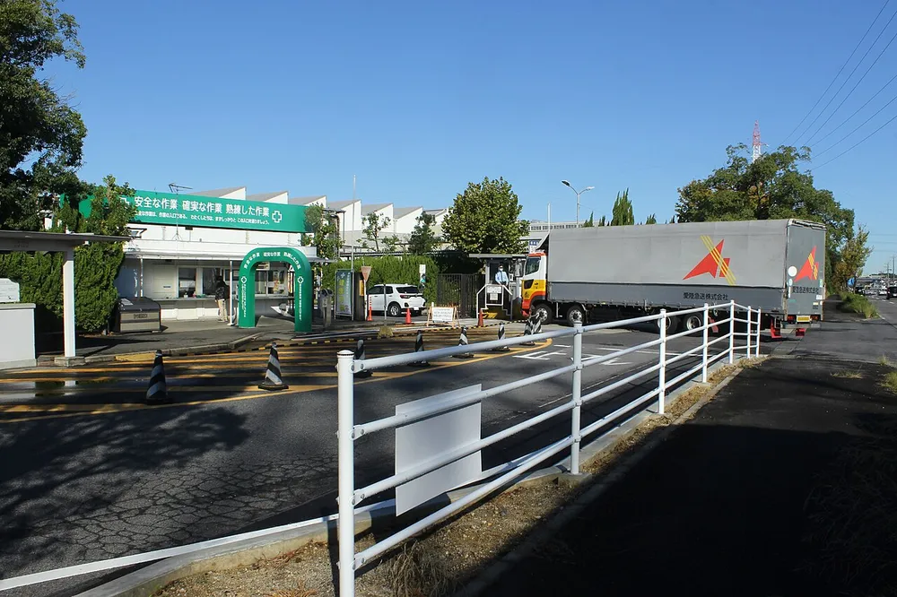
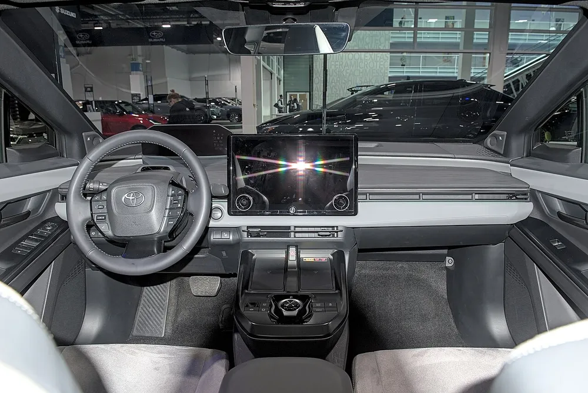
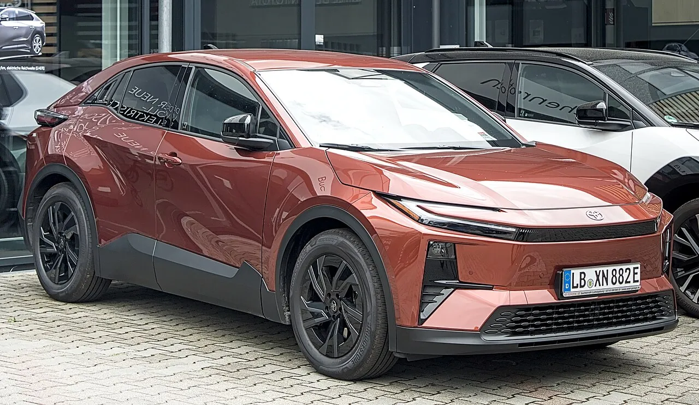
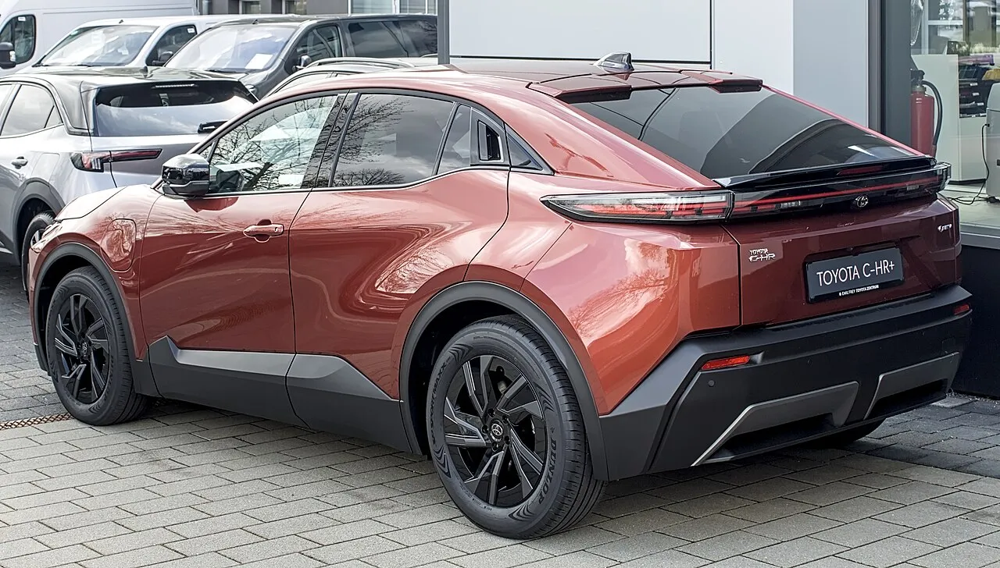

▲ Toyota of Morristown 쇼룸의 2026년형 토요타 C-HR SE AWD(촬영자 설명 기준) ⓒ BuickRiviera99 / Wikimedia Commons, CC BY-SA 4.0
"배터리가 가득 찬 채 회생제동을 쓰면, 달리던 차가 갑자기 힘을 잃을 수 있다." 토요타가 2026년형 순수 전기차 C-HR을 미국에서 리콜한다. 미국 도로교통안전청(NHTSA) 캠페인 번호는 26V570, 대상은 8,521대다. 구동 배터리 제어 소프트웨어의 프로그램 오류로 배터리가 과충전될 수 있고, 그러면 전기 구동계가 스스로 꺼지며 주행 중 구동력을 잃을 수 있다는 내용이다.
이 글은 NHTSA 리콜 데이터베이스 API(캠페인 26V570)의 공식 요약과 캐나다 교통부(Transport Canada) 리콜 공지를 직접 열어 확인하고, The EV Report·Electrek·Carscoops·HotCars 등의 보도를 교차했다. 일부 매체는 "약 1만 대"라고 썼는데, 이 숫자가 어디서 나왔는지도 확인된 만큼만 정리한다. C-HR 전기차는 한국에서 판매가 확인되지 않은 모델이라 국내 영향은 별도 항목에서 짚는다.
1. 한눈에 보는 26V570: 무엇이, 몇 대가 대상인가
NHTSA 리콜 데이터베이스에 올라온 공식 요약은 짧다. 토요타 모터 엔지니어링 앤드 매뉴팩처링이 일부 2026년형 C-HR 배터리 전기차를 리콜하며, 소프트웨어 프로그래밍 오류로 특정 주행 조건에서 전기 구동계 배터리가 과충전될 수 있고, 이로 인해 전기 구동계가 꺼져 구동력을 잃을 수 있다는 것이다. 위험 설명은 "예기치 않은 구동력 상실은 충돌 위험을 높인다"는 한 문장이다.
| 항목 | 내용 | 근거 |
|---|---|---|
| NHTSA 캠페인 번호 | 26V570 (제조사 번호 26TA17) | NHTSA 리콜 API |
| 대상 차량 | 2026년형 토요타 C-HR 배터리 전기차 | NHTSA |
| 대수(미국) | 8,521대 | NHTSA |
| 제작 기간 | 2026년 2월 6일~7월 10일, 일본 다카오카 공장 | Carscoops 등 보도(NHTSA API 요약에는 미표기) |
| 부품 분류 | 전기 시스템: 추진 시스템 | NHTSA |
| 무선 업데이트(OTA) | 해당 없음. 딜러 입고 필요 | NHTSA API의 OTA 항목 "false" |
| 시정 방법 | 딜러가 BEV ECU 소프트웨어를 무상 업데이트 | NHTSA |
| 소유자 통지 | 2026년 10월 18일 발송 예정 | NHTSA |
| 접수일 | 2026년 9월 2일로 읽힘(API 표기 "02/09/2026"을 일/월/연으로 해석한 추정) | 캐나다 교통부 최초 게시일 9월 2일과 일치 |
소유자는 토요타 고객 서비스(1-800-331-4331)로 문의할 수 있다고 NHTSA는 안내한다. NHTSA 사이트에서 VIN으로 내 차가 대상인지 직접 확인할 수 있다. NHTSA 리콜 조회 바로가기

▲ 독일 에슬링겐에서 촬영된 C-HR+ 전면 좌측. 유럽형 사진이며 북미 2026년형 C-HR과 외관 세부 사양이 같은지는 확인하지 못했다 ⓒ Alexander Migl / Wikimedia Commons, CC BY-SA 4.0
2. 왜 힘이 끊기나: 회생제동과 배터리 보호 로직
NHTSA 요약은 "특정 주행 조건"이라고만 적었다. 구체적인 상황은 캐나다 교통부 공지와 토요타 캐나다 설명을 인용한 보도에 더 자세히 나온다. 토요타 캐나다 설명에 따르면 감속할 때 회생제동이 구동 배터리를 충전하는데, 배터리 충전량이 높은 상태에서 소프트웨어 문제로 회생제동이 배터리를 과충전시킬 수 있고, 그러면 전기 구동계가 꺼지면서 동력을 잃을 수 있다. 캐나다 교통부는 고속 주행 중에 동력이 끊기면 충돌 위험이 커진다고 설명했다.
Carscoops는 이 결함의 성격을 이렇게 풀었다. 배터리 충전을 제한해야 할 보호 로직에 프로그래밍 오류가 있고, 주로 저온·높은 충전 상태·장시간 회생 주행이 겹칠 때 문제가 생기는 것으로 보인다는 해석이다. 다만 이 "저온" 조건은 매체의 해석이며 NHTSA 요약이나 토요타 공식 문서에서는 확인하지 못했다. 같은 보도는 문제가 생기면 경고등과 경고음이 작동한다고 전했다.
| 단계 | 일어나는 일 | 확인 수준 |
|---|---|---|
| 1. 조건 | 배터리가 높은 충전 상태에서 회생제동 사용(저온·장시간 회생이 겹치면 더 위험하다는 해석도 있음) | 토요타 캐나다 설명 / 저온은 Carscoops 해석 |
| 2. 소프트웨어 오류 | 충전을 제한해야 할 BEV ECU 로직의 프로그램 오류로 배터리 과충전 | NHTSA 공식 요약 |
| 3. 보호 동작 | 전기 구동계 셧다운, 경고등과 경고음 작동 | Carscoops 보도 |
| 4. 결과 | 주행 중 구동력 상실, 충돌 위험 증가 | NHTSA 공식 요약 |
구동력이 끊긴다고 해서 조향과 제동까지 함께 사라진다고 확인된 것은 아니다. 같은 토요타 계열 전기차의 앞선 리콜(26V393)에서는 조향과 제동 보조가 유지된다고 설명됐지만, 이번 C-HR 건에서 같은 설명이 나왔는지는 확인하지 못했다. 앞선 사례는 "주행 중에 힘이 끊긴다"… 렉서스 RZ가 리콜 대상에 오른 이유에서 다뤘다.

▲ 유럽 딜러 쇼룸의 C-HR+(검은색, 후면). 유럽의 C-HR+가 북미 C-HR 전기차와 같은 차라는 보도가 있으나 토요타 공식 확인은 확인 못 함 ⓒ Ssu / Wikimedia Commons, CC BY-SA 4.0
3. 8,521대인가 1만 대인가: 대수 차이의 정체
초기 보도에는 "약 1만 대"라는 제목이 많았다. InsideEVs·Quartz·Motor1과 Electrek의 9월 8~9일자 기사가 그랬고, Electrek은 9월 10일 "8,521대 [업데이트]"로 고쳐 썼다. 두 숫자는 서로 다른 범위를 가리킨 것으로 보인다.
| 구분 | 대수 | 출처 |
|---|---|---|
| 미국 (NHTSA 26V570) | 8,521대 | NHTSA 리콜 API |
| 캐나다 | 약 1,310대 | 토요타 캐나다 발표를 인용한 보도(Auto123 등) |
| 두 나라 합산(단순 계산) | 약 9,831대 (약 1만 대) | 본 기사의 단순 합산, 추정 |
| Electrek 9월 10일 정정 | 8,521대 | "초기에는 약 1만 대로 보도됐으나 NHTSA 공식 서류는 8,521대"라는 취지 |
정리하면 미국만 보면 8,521대가 맞고, "약 1만 대"는 캐나다를 포함한 북미 규모를 반올림한 표현일 가능성이 크다. 다만 NHTSA 리콜 보고서(Part 573) PDF 원문은 열어 보지 못해 "1만 대"라는 숫자가 토요타 발표문 어디에서 나왔는지는 확인하지 못했다. 합산이라는 설명은 두 수치가 비슷하다는 데서 나온 추정이다.

▲ 쇼룸의 C-HR+ 전면. 앞 표지판에 'TOYOTA C-HR+'가 적혀 있다. 연식은 단정하지 않는다 ⓒ Ssu / Wikimedia Commons, CC BY-SA 4.0
4. 어떻게 발견됐나: '미래 토요타 EV' 시험이 단서
Carscoops는 토요타가 지난 4월 공개되지 않은 "미래 BEV 모델"을 시험하던 중 이 문제를 처음 발견했다고 전했다. 이 발견이 다른 전기차의 ECU 점검으로 이어졌고, 결국 2026년형 C-HR이 영향권으로 확인됐다는 설명이다. 이 배경은 Carscoops의 보도 내용으로, 미래 모델이 무엇인지는 알려지지 않았고 이 부분은 NHTSA 데이터 요약에서는 확인하지 못했다.
이 설명이 맞다면 이번 리콜의 핵심은 이미 판매된 차에서 문제가 터져서가 아니라 개발 중 시험에서 같은 소프트웨어 구조의 위험을 발견했다는 데 있다. Carscoops는 토요타가 관련 보증 클레임이나 현장 보고를 인지하지 못했다고 전한다. 다만 이 "사고 없음" 설명은 토요타 측 주장이며 독립적으로 검증된 것은 아니다.
| 시점 | 내용 | 출처 |
|---|---|---|
| 2026년 2월 6일~7월 10일 | 대상 차량 생산 기간 | Carscoops 등 보도 |
| 2026년 4월 | 미공개 미래 BEV 시험 중 문제 발견, 이후 ECU 검토 확대 | Carscoops |
| 2026년 9월 2일 | 캐나다 교통부 리콜 최초 게시, NHTSA 접수(읽힘) | 캐나다 교통부, NHTSA(추정) |
| 2026년 9월 8~11일 | 북미 언론 보도 확산 | Electrek·Carscoops 등 |
| 2026년 10월 18일 | 미국 소유자 통지서 발송 예정 | NHTSA |
| 2026년 11월 초 | 캐나다 소유자 통지 예정 | 토요타 캐나다 설명을 인용한 보도 |

▲ 토요타 다카오카 공장 부근. 대상 차량이 이 공장에서 만들어졌다고 Carscoops가 전했으며, 사진은 2021년 10월 촬영본이라 현재 모습과 다를 수 있다 ⓒ Oka21000 / Wikimedia Commons, CC BY-SA 4.0
5. 소유자가 알아야 할 것: 충전 80% 제한 권고와 시정 절차
캐나다 교통부 공지에는 눈에 띄는 임시 조치가 있다. 리콜 수리가 끝날 때까지 차량의 최대 충전 상태(SOC)를 80% 이하로 제한하라는 토요타의 권고다. 과충전이 문제이므로 만충 근처를 피하라는 논리로 읽힌다. 미국 NHTSA 요약에는 같은 문구가 보이지 않았고, 미국 소유자에게도 같은 권고가 적용되는지는 확인하지 못했다.
✅ 해당 차 소유자(북미)가 할 일
· 내 차가 2026년형 C-HR BEV인지, VIN이 대상인지 NHTSA 사이트 또는 토요타 고객 서비스(미국 1-800-331-4331)에서 확인
· 통지서(미국 10월 18일 예정, 캐나다 11월 초 예정)를 기다리기 전에 딜러에 예약 가능 여부 문의
· 캐나다 공지 기준으로는 수리 전까지 충전 한도를 80% 이하로 설정
· 수리는 OTA가 아니라 딜러 방문이 필요하며 비용은 무상
"소프트웨어 문제인데 왜 OTA가 아니냐"는 의문이 남는다. NHTSA 데이터는 이 리콜의 OTA 항목을 해당 없음으로 표시했고, 일부 보도는 이 ECU가 무선 업데이트를 받지 못한다고 전한다. 다만 그 이유는 토요타 공식 설명으로 확인하지 못했다. 토요타의 올해 리콜 흐름은 토요타 2026년 리콜 누적 100만 대 돌파 기사에서 볼 수 있다.

▲ 취리히 오토쇼 전시차 C-HR+ 실내. 유럽형 모델이며 북미 2026년형 C-HR과 실내 사양이 같은지는 확인하지 못했다 ⓒ Alexander Migl / Wikimedia Commons, CC BY-SA 4.0
6. 한국 소비자 관점: 국내 영향과 전기차 소프트웨어 리콜 일반론
국내 영향은 확인된 바 없다. 이번 C-HR 전기차는 한국에서 판매되는 모델로 확인되지 않았고, 국토교통부나 토요타코리아가 이 건과 관련해 국내 리콜을 공지했다는 내용도 찾지 못했다. 국내에서 판매 중인 다른 토요타 전기차가 같은 ECU 소프트웨어를 쓰는지도 확인된 정보가 없다. 다만 앞서 미국에서는 같은 토요타 계열 전기차(bZ·렉서스 RZ·스바루 솔테라, 26V393)에서도 배터리 ECU 소프트웨어 문제가 리콜로 이어진 전례가 있다.
| 구분 | C-HR BEV (26V570) | bZ·RZ·솔테라 (26V393) |
|---|---|---|
| 대수(미국) | 8,521대 | 20,991대 |
| 증상 | 배터리 과충전 → 구동계 셧다운 → 구동력 상실 | 반도체 메모리 주소 공유 → 주행 중 구동력 상실 |
| 조치 | BEV ECU 소프트웨어 무상 업데이트 | 배터리 ECU 소프트웨어 무상 업데이트 |
한국 소비자가 챙길 일반 상식은 다음과 같다. 국내 판매 차량의 리콜은 자동차리콜센터(car.go.kr)에서 번호판이나 차대번호로 조회할 수 있고, 시정 비용은 제작사가 부담한다. 방법은 "리콜인데 통지서를 못 받았다"… 차대번호로 1분 만에 확인하는 법에 정리했다. 해외 직구·병행수입 전기차는 국내 리콜 통지가 닿지 않을 수 있어 제작국 리콜 정보를 직접 확인하는 편이 안전하다(일반론). 리콜과 무상수리의 차이는 리콜 vs 무상수리 차이 가이드에서 볼 수 있다.
▲ 독일 필더슈타트에서 촬영된 C-HR+ 후면 3/4. 유럽형 사진으로 북미 사양과의 세부 차이는 확인하지 못했다 ⓒ Alexander Migl / Wikimedia Commons, CC BY-SA 4.0
7. 리콜 대상 차는 어떤 전기차인가: 북미 C-HR BEV 사양과 80% 한도의 의미
토요타 미국 프레스룸 발표에 따르면 북미 2026년형 C-HR 배터리 전기차는 74.7kWh 리튬이온 배터리와 앞뒤 전기모터(e-액슬) 기반 상시 AWD를 기본으로 한다. 시스템 합산 출력은 338마력, 주행거리는 제조사 추정 최대 290마일이다. 충전 포트는 NACS이며 급속충전은 이상적인 조건에서 10%에서 80%까지 약 30분이라고 한다. 이 차는 토요타 e-TNGA 플랫폼을 쓰고 SE와 XSE 두 트림으로 나온다.
| 항목 | 내용 | 리콜과의 관련성 |
|---|---|---|
| 배터리 | 74.7kWh 리튬이온 | 과충전 위험이 걸린 구동 배터리 |
| 출력·구동 | 338마력, 앞뒤 모터 AWD | 구동력 상실은 전·후 구동계가 꺼지는 상황으로 이해할 수 있으나 구체 동작은 확인하지 못함(추정) |
| 주행거리 | 제조사 추정 최대 290마일 | 80% 한도를 지키면 이보다 줄어듦 |
| 충전 | NACS, 급속 10~80% 약 30분(이상적 조건) | 급속충전 후 높은 충전량에서 출발하는 상황이 잦을 수 있음(추정) |
| 배터리 보증 | 8년 또는 10만 마일 중 먼저 도래하는 쪽 | 이번 리콜 수리와는 별개(수리는 무상) |

▲ 독일 딜러 매장의 C-HR+ 전면 우측. 번호판 지역 코드로 보아 독일 현지 촬영으로 보이며 유럽형 모델이다 ⓒ Alexander Migl / Wikimedia Commons, CC BY-SA 4.0
캐나다가 권고한 80% 충전 한도가 실제로 얼마나 불편한지 단순 비례로 따져 보자. 20%는 74.7kWh의 약 14.9kWh에 해당하며, 290마일 기준으로는 약 58마일(약 93km)이다. 다만 이는 용량과 주행거리가 충전량에 정비례한다고 가정한 계산일 뿐이며 실제 주행거리는 속도·기온·주행 패턴에 따라 달라진다. 앞서 본 대로 문제의 소프트웨어 로직은 높은 충전 상태에서 회생제동을 쓸 때 위험하다고 알려졌으므로, 80% 한도는 만충 직후 내리막 회생제동 같은 상황을 피하려는 임시 조치로 읽힌다(해석).
캐나다 교통부 공지는 2026년 9월 2일 처음 게시된 뒤 9월 17일 갱신됐고, 리콜 식별 번호는 RA-82653·2026421이다. 토요타는 소유자에게 우편으로 통지하고 딜러를 안내한다고 설명했다. 미국 NHTSA의 최종 캠페인 번호는 26V570000으로 표기되며, 이 글에서는 흔히 쓰는 26V570으로 줄여 적었다.

▲ C-HR+ 후면 3/4. 가로로 이어진 후미등과 검은 하부 클래딩이 특징이다. 유럽형 사진이라 북미 사양과의 차이는 확인하지 못했다 ⓒ Alexander Migl / Wikimedia Commons, CC BY-SA 4.0
한국 독자 입장에서 눈여겨볼 점은 모델 이름이 겹친다는 것이다. 유럽에서 C-HR+로 판매되는 차와 북미 C-HR BEV가 같은 계열이라는 보도가 있지만, 한국에는 C-HR 전기차가 정식 판매되지 않으므로 국내 소유자가 직접 해당될 가능성은 낮다. 다만 병행수입이나 해외 직구로 들여온 개체가 있다면 제작 국가의 리콜 정보를 별도로 확인해야 한다(일반론).
8. 자주 나오는 질문
| 질문 | 현재 답 | 근거 수준 |
|---|---|---|
| 2027년형도 대상인가? | 2026년형만 대상이라고 보도됨 | Auto123 등 보도, NHTSA도 2026년형으로 표기 |
| 유럽 C-HR+도 대상인가? | 같은 차라는 보도는 있으나 유럽 리콜 여부는 확인 못 함 | EVSHIFT 등 보도 |
| 사고가 있었나? | 토요타는 현장 보고·보증 클레임을 인지하지 못했다고 밝힘 | 토요타 주장(보도 인용) |
| 비용은? | 무상 | NHTSA |
| 한국은? | 국내 판매·리콜 공지 확인 못 함 | 확인 못 함 |
| 충전을 80%로 제한하면 얼마나 손해인가? | 단순 비례로 약 20%, 최대 주행거리 기준 약 58마일(93km) 감소 추정 | 본 기사의 단순 계산, 실제와 다를 수 있음 |
| 배터리 보증은 어떻게 되나? | 북미 기준 8년 또는 10만 마일. 리콜 수리는 이와 별개로 무상 | 토요타 USA 프레스룸, NHTSA |
| 경고가 뜨면 어떻게 해야 하나? | 안전한 곳에 정차하고 토요타 고객센터 또는 딜러에 문의하는 것이 일반적인 대응(일반론) | 제조사 별도 지침은 확인하지 못함 |
토요타 2026년형 C-HR 전기차 8,521대가 미국에서 리콜된다(NHTSA 26V570). BEV ECU 소프트웨어 오류로 배터리가 과충전되면 구동계가 꺼져 주행 중 구동력을 잃을 수 있고, 시정은 딜러의 무상 소프트웨어 업데이트이며 OTA가 아니다. 소유자 통지서는 10월 18일 발송 예정이다. 토요타는 보증 클레임이나 현장 보고를 인지하지 못했다고 밝혔다.
"약 1만 대" 보도는 캐나다 약 1,310대를 더한 북미 규모로 보이며(추정), 한국에서는 판매·리콜이 확인되지 않았다. 캐나다 공지는 수리 전까지 충전 상한 80%를 권고했지만 미국의 동일 권고는 확인하지 못했다. 국내 독자는 이번 건보다 리콜센터 조회법과 병행수입 차량의 해외 리콜 확인 요령을 챙겨 두면 된다.